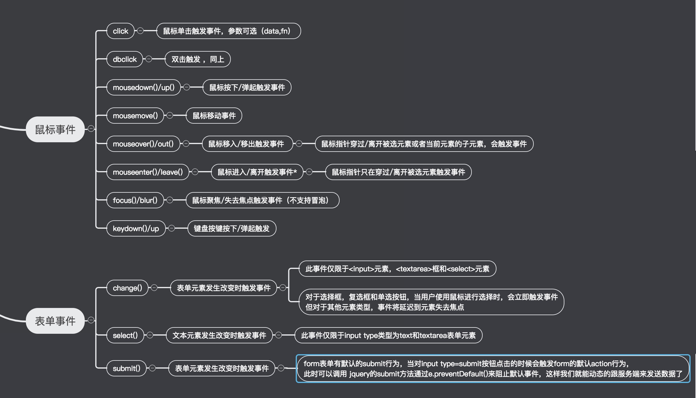

前面我们介绍完js的事件流的概念之后，相信大家对事件流也有所了解了。那么接下来我们看一下jquery的事件操作。

在说jquery的每个事件之前，我们先来看一下事件对象 。
Event 对象代表事件的状态，比如事件在其中发生的元素、键盘按键的状态、鼠标的位置、鼠标按钮的状态。
1.什么时候会产生Event 对象呢?
例如: 当用户单击某个元素的时候,我们给这个元素注册的事件就会触发,该事件的本质就是一个函数,而该函数的形参接收一个event对象。
2.事件通常与函数结合使用，函数不会在事件发生前被执行！
由于微软和网景乱搞，后来必须要为事件传播机制，制定一个标准，因为事件捕获是网景公司开发出来的，而事件冒泡是由微软公司开发出来的，它们都想要自己的技术成为标准，所以导致这两个公司老是干架，制定标准的人为了不让它们干架，所以研发了事件流。
在触发的事件的函数里面我们会接收到一个event对象，通过该对象我们需要的一些参数，比如说我们需要知道此事件作用到谁身上了，就可以通过event的属性target来获取到(IE暂且不谈)，或者想阻止浏览器的默认行为可以通过方法preventDefault()来进行阻止。以下是event对象的一些属性和方法：
|
属性 |
描述 |
|---|---|
|
altKey |
返回当事件被触发时，”ALT” 是否被按下。 |
|
button |
返回当事件被触发时，哪个鼠标按钮被点击。 |
|
clientX |
返回当事件被触发时，鼠标指针的水平坐标。 |
|
clientY |
返回当事件被触发时，鼠标指针的垂直坐标。 |
|
ctrlKey |
返回当事件被触发时，”CTRL” 键是否被按下。 |
|
metaKey |
返回当事件被触发时，”meta” 键是否被按下。 |
|
relatedTarget |
返回与事件的目标节点相关的节点。 |
|
screenX |
返回当某个事件被触发时，鼠标指针的水平坐标。 |
|
screenY |
返回当某个事件被触发时，鼠标指针的垂直坐标。 |
|
shiftKey |
返回当事件被触发时，”SHIFT” 键是否被按下 |
IE属性(除了上面的鼠标/事件属性，IE 浏览器还支持下面的属性)。
|
属性 |
描述 |
|---|---|
|
|
如果事件句柄想阻止事件传播到包容对象，必须把该属性设为 true。 |
|
fromElement |
对于 mouseover 和 mouseout 事件，fromElement 引用移出鼠标的元素。 |
|
keyCode |
对于 keypress 事件，该属性声明了被敲击的键生成的 Unicode 字符码。对于 keydown 和 keyup |
|
offsetX,offsetY |
发生事件的地点在事件源元素的坐标系统中的 x 坐标和 y 坐标。 |
|
|
如果设置了该属性，它的值比事件句柄的返回值优先级高。把这个属性设置为 |
|
|
对于生成事件的 Window 对象、Document 对象或 Element 对象的引用。 |
|
toElement |
对于 mouseover 和 mouseout 事件，该属性引用移入鼠标的元素。 |
|
x,y |
事件发生的位置的 x 坐标和 y 坐标，它们相对于用CSS动态定位的最内层包容元素。 |
标准 Event 属性，下面列出了 2 级 DOM 事件标准定义的属性。
|
属性和方法 |
描述 |
|---|---|
|
bubbles |
返回布尔值，指示事件是否是起泡事件类型。 |
|
|
返回布尔值，指示事件是否可拥可取消的默认动作。 |
|
|
返回其事件监听器触发该事件的元素。 |
|
eventPhase |
返回事件传播的当前阶段。 |
|
|
返回触发此事件的元素（事件的目标节点）。 |
|
timeStamp |
返回事件生成的日期和时间。 |
|
|
返回当前 Event 对象表示的事件的名称。 |
|
initEvent() |
初始化新创建的 Event 对象的属性。 |
|
|
通知浏览器不要执行与事件关联的默认动作。 |
|
|
不再派发事件。 |
获得event对象兼容性写法 event || (event = window.event);
获得target兼容型写法 event.target||event.srcElement
阻止浏览器默认行为兼容性写法 event.preventDefault ? event.preventDefault() : (event.returnValue = false);
阻止冒泡写法 event.stopPropagation ? event.stopPropagation() : (event.cancelBubble = true);
语法：
bind(type,data,fn)描述：为每一个匹配元素的特定事件（像click）绑定一个事件处理器函数。
参数解释：
type (String) : 事件类型
data (Object) : (可选) 作为event.data属性值传递给事件对象的额外数据对象
fn ( Function) : 绑定到每个匹配元素的事件上面的处理函数
示例：
当每个p标签被点击的时候，弹出其文本
$("p").bind("click", function(){
alert( $(this).text() );
});你可以在事件处理之前传递一些附加的数据。
function handler(event) {
//event.data 可以获取bind()方法的第二个参数的数据
alert(event.data.foo);
}
$("p").bind("click", {foo: "bar"}, handler)通过返回false来取消默认的行为并阻止事件起泡。
$("form").bind("submit", function() { return false; })通过使用 preventDefault() 方法只取消默认的行为。
$("form").bind("submit", function(event){
event.preventDefault();
});语法：
unbind(type,fn);描述：
如果没有参数，则删除所有绑定的事件。
如果把在绑定时传递的处理函数作为第二个参数，则只有这个特定的事件处理函数会被删除。
参数解释：
type (String) : (可选) 事件类型
fn(Function) : (可选) 要从每个匹配元素的事件中反绑定的事件处理函数
示例：
把所有段落的所有事件取消绑定
$("p").unbind()将段落的click事件取消绑定
$("p").unbind( "click" )
删除特定函数的绑定，将函数作为第二个参数传入
var foo = function () {
//绑定事件和解绑事件的事件处理函数
};
$("p").bind("click mouseenter", foo); // 给p段落绑定click mouseenter事件
$("p").unbind("click", foo); // 只解绑了p段落标签的click事件其实事件的绑定和解绑，都是我为了自定义事件做准备（大家把jQuery的提供的事件熟记在心），以后对jquery熟了以后，可以玩一下自定义事件
语法：
trigger(type,data);描述：在每一个匹配的元素上触发某类事件，它触发的是由bind()注册的自定义事件。
参数解释：
type (String) : 要触发的事件类型
data (Array) : (可选)传递给事件处理函数的附加参数
示例：
给一个按钮添加自定义的事件
$('button').bind('myClick',function(ev,a,b){
//给button按钮添加的自定义事件myClick事件
})然后通过trigger()触发自定义的事件
$('button').trigger('myClick',[1,2])
通俗的讲，事件就是onclick，onmouseover，onmouseout，等就是事件，委托呢，就是让别人来做，这个事件本来是加在某些元素上的，然而你却加到别人身上来做，完成这个事件。
举个列子：有三个同事预计会在周一收到快递。为签收快递，有两种办法：一是三个人在公司门口等快递；二是委托给前台MM代为签收。现实当中，我们大都采用委托的方案（公司也不会容忍那么多员工站在门口就为了等快递）。前台MM收到快递后，她会判断收件人是谁，然后按照收件人的要求签收，甚至代为付款。这种方案还有一个优势，那就是即使公司里来了新员工（不管多少），前台MM也会在收到寄给新员工的快递后核实并代为签收。
原理：
利用冒泡的原理，把事件加到父级上，触发执行效果。
作用：
1.性能要好
2.针对新创建的元素，直接可以拥有事件
事件源 :
跟this作用一样(他不用看指向问题，谁操作的就是谁)，event对象下的。
使用情景：
为DOM中的很多元素绑定相同事件。
为DOM中尚不存在的元素绑定事件。
示例：
<body>
<ul>
<li class="luffy">路飞</li>
<li>路飞</li>
<li>路飞</li>
</ul>
</body>
<script src="jquery-3.2.1.js"></script>
<script type="text/javascript">
$(document).ready(function(){
//通过on()方法
$('ul').on('click','#namei,.luffy',function(){
console.log(this);
})
//未来追加的元素
$('ul').append('<a id="namei">娜美</a>')
}
</script>语法：
on(type,selector,data,fn);描述：在选定的元素上绑定一个或多个事件处理函数
events( String) : 一个或多个空格分隔的事件类型selector( String) : 一个选择器字符串，用于过滤出被选中的元素中能触发事件的后代元素data: 当一个事件被触发时，要传递给事件处理函数的event.data。fn:回调函数